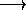
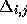
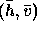
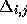
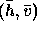

In this case we have the following one way structure:
left and right image  left and right edge detector (precomputed)
matching module  interpolation. There is no
feedback from any modules. We have used the difference image , for
the highest resolution to compute the right and the left edges 
using (6).
interpolation. There is no
feedback from any modules. We have used the difference image , for
the highest resolution to compute the right and the left edges 
using (6).